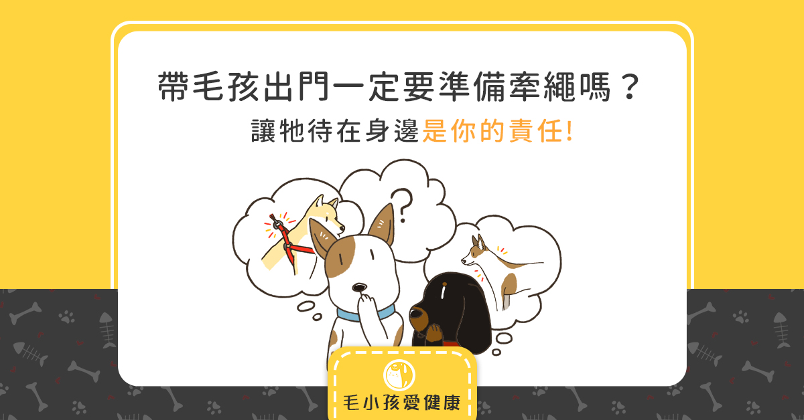
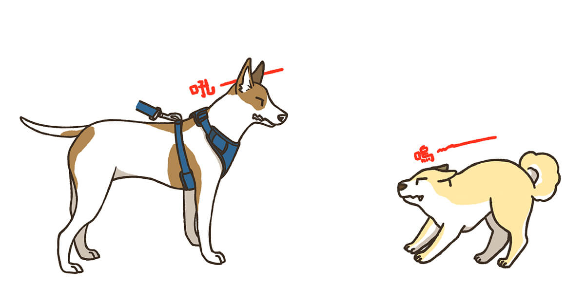
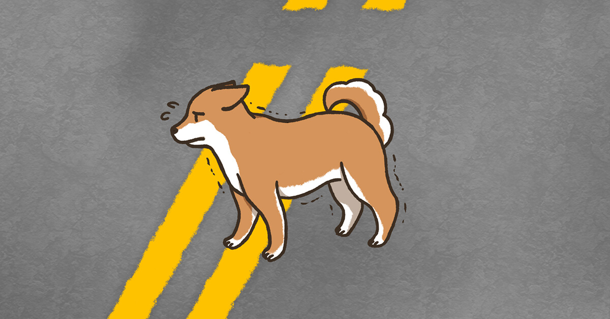
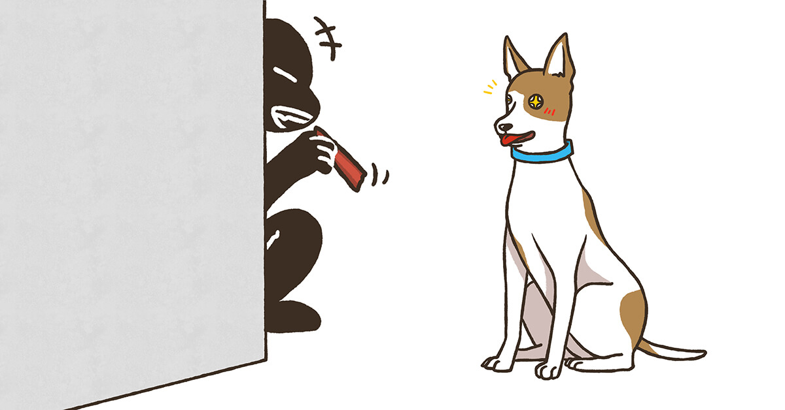
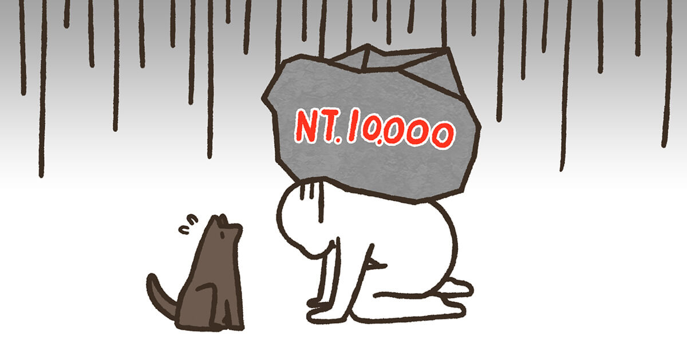
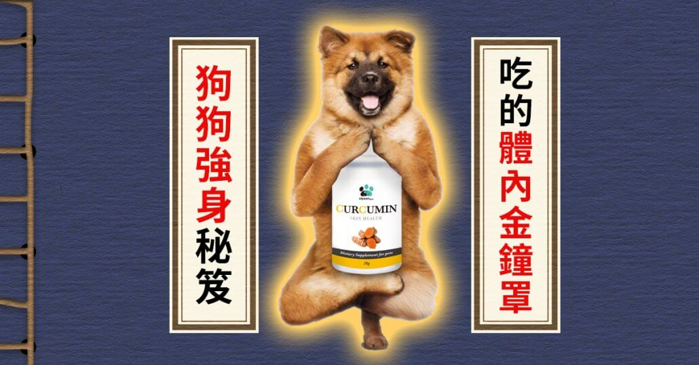

假日走在公園裡，總是會看到許多主人帶著毛孩出來散步、活動。
你會發現有的毛孩有主人繫著牽繩，有的毛孩卻沒有。
有時候沒有牽繩的毛孩還會跑到離主人較遠的前方，才又回頭過來找主人，
就這樣來來回回了一大段路。
有些主人覺得既然帶毛孩出來放風，就不該再拘束牠們，
應該要讓牠們可以盡情地活動，不然整天綁著牽繩好可憐。
不過，你知道嗎？
其實幫毛孩繫上牽繩，才是真正能夠保護牠，也才是真正對牠好唷！
以下，就讓我們來看看在沒有牽繩的情況下會發生哪些事吧！

帶毛孩出門一定要準備牽繩嗎？讓牠待在身邊是你的責任
與其他毛孩發生衝突

假日遛狗的主人很多，毛孩當然也會有不少跟其他毛孩接觸的機會。
如果毛孩突然受到別的毛孩挑釁，與對方吵架甚至打架，
或者毛孩興奮想找對方玩，卻被當成是在挑釁。
這時候，如果兩隻毛孩發生了衝突，
而主人也因為沒有牽繩可以快速制止毛孩的行為，導致一方或雙方受傷，
那麼，有沒有幫毛孩繫上牽繩就會成為法官判斷的其中一個依據。
所以，一定要用牽繩讓毛孩待在身邊，遇到毛孩間的衝突時，
才可以及時制止毛孩，避免造成更大的傷害，
而在事後釐清責任時，對自己和毛孩也會比較有保障。
如果毛孩突然受到別的毛孩挑釁，與對方吵架甚至打架，
或者毛孩興奮想找對方玩，卻被當成是在挑釁。
這時候，如果兩隻毛孩發生了衝突，
而主人也因為沒有牽繩可以快速制止毛孩的行為，導致一方或雙方受傷，
那麼，有沒有幫毛孩繫上牽繩就會成為法官判斷的其中一個依據。
所以，一定要用牽繩讓毛孩待在身邊，遇到毛孩間的衝突時，
才可以及時制止毛孩，避免造成更大的傷害，
而在事後釐清責任時，對自己和毛孩也會比較有保障。
誤闖馬路

毛孩對聲音非常敏感，如果在開心散步時突然出現巨響，
很可能就會嚇到牠，而驚慌感就容易讓毛孩想要逃離現場。
這時如果沒有牽繩來掌握毛孩的行動，
又正好帶毛孩散步的路線就離馬路不遠時，
毛孩很有可能就會不小心誤闖到馬路中間，
這時候，不論是毛孩受到傷害，或是過路車為了閃躲毛孩而受傷，
都很可能會造成永遠無法挽回的悲劇。
所以，為了保護毛孩的健康和安全，牽繩請一定要好好繫上。
很可能就會嚇到牠，而驚慌感就容易讓毛孩想要逃離現場。
這時如果沒有牽繩來掌握毛孩的行動，
又正好帶毛孩散步的路線就離馬路不遠時，
毛孩很有可能就會不小心誤闖到馬路中間，
這時候，不論是毛孩受到傷害，或是過路車為了閃躲毛孩而受傷，
都很可能會造成永遠無法挽回的悲劇。
所以，為了保護毛孩的健康和安全，牽繩請一定要好好繫上。
走丟、遭竊都在一瞬間

活潑的毛孩總是喜歡在出門散步時到處探險，
這裡嗅嗅、那裡跳跳，這段時光就是這麼地樸實無華且愉快。
但是如果少了牽繩的連接，要掌握毛孩的行蹤有時候就會有些困難了。
也許毛孩一個太興奮，不小心走了太長的距離，
回頭又沒看到主人，就會心急地到處尋找，最終失去方向。
也許最終找到了牠，但不論是你或牠，都已經經歷了一段艱辛的折磨。
還有另一個可怕的狀況，
你一直精心照顧你的寶貝，你也知道你家的毛孩既可愛、毛色又漂亮，
但別人可能也這麼覺得，甚至心動地想自己養，或是覺得可以賣了賺一筆。
也許下一個轉角，你就突然發現毛孩不見了，
還能找回牠嗎？真的不知道⋯⋯
這裡嗅嗅、那裡跳跳，這段時光就是這麼地樸實無華且愉快。
但是如果少了牽繩的連接，要掌握毛孩的行蹤有時候就會有些困難了。
也許毛孩一個太興奮，不小心走了太長的距離，
回頭又沒看到主人，就會心急地到處尋找，最終失去方向。
也許最終找到了牠，但不論是你或牠，都已經經歷了一段艱辛的折磨。
還有另一個可怕的狀況，
你一直精心照顧你的寶貝，你也知道你家的毛孩既可愛、毛色又漂亮，
但別人可能也這麼覺得，甚至心動地想自己養，或是覺得可以賣了賺一筆。
也許下一個轉角，你就突然發現毛孩不見了，
還能找回牠嗎？真的不知道⋯⋯
法規：未繫牽繩最高可罰一萬

其實從2015年5月19日開始，臺北市動物保護自治條例就已經啟用了。
如果遛狗時沒有繫上牽繩，可以處兩千元以上、一萬元以下的罰鍰，
並且可命令飼主限期改善，屆期仍未改善者，得按次處罰至改善為止。
臺北市在2017年有21件，罰鍰金額共計11萬6000元，
去年則是有32件，共罰了36萬9000元，
而今年更是嚴重，光是前半年就已經有30件，金額達到了14萬2000元。
牽繩是連接你與毛孩的緣分，同時可以保證毛孩的健康與安危，
下一次帶寶貝出門，記得一定要確認牽繩有沒有好好繫上唷！
如果遛狗時沒有繫上牽繩，可以處兩千元以上、一萬元以下的罰鍰，
並且可命令飼主限期改善，屆期仍未改善者，得按次處罰至改善為止。
臺北市在2017年有21件，罰鍰金額共計11萬6000元，
去年則是有32件，共罰了36萬9000元，
而今年更是嚴重，光是前半年就已經有30件，金額達到了14萬2000元。
牽繩是連接你與毛孩的緣分，同時可以保證毛孩的健康與安危，
下一次帶寶貝出門，記得一定要確認牽繩有沒有好好繫上唷！
